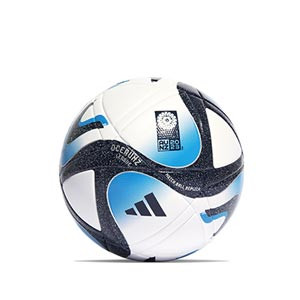

PALMARES
| Selección | Campeón | Subcampeón |
|---|---|---|
| Brasil | 5 | 2 |
| Alemania | 4 | 4 |
| Italia | 4 | 2 |
| Argentina | 3 | 3 |
| Francia | 2 | 2 |
| Uruguay | 2 | 0 |
| Inglaterra | 1 | 0 |
| España | 1 | 0 |
| Países Bajos | 0 | 3 |
GOLEADORES
| Pos. | Jugador | Selección | Goles | Partidos | Promedio | Torneos jugados |
|---|---|---|---|---|---|---|
| 1 | Miroslav Klose | Alemania | 16 | 24 | 0,67 | 2002,2006,2010,2014 |
| 2 | Ronaldo | Brasil | 15 | 19 | 0,79 | 1994,1998,2002,2006 |
| 3 | Gerd Muller | Alemania | 14 | 13 | 1,08 | 1970,1974 |
| 4 | Just Fontaine | Francia | 13 | 6 | 2,17 | 1958 |
| 5 | Lionel Messi | Argentina | 13 | 26 | 0,5 | 2006,2010,2014,2018,2022 |
| 6 | Kylian Mbappé | Francia | 12 | 14 | 0,86 | 2018,2022 |
| 7 | Pelé | Brasil | 12 | 14 | 0,86 | 1958,1962,1966,1970 |
| 8 | Sándor Kocsis | Hungría | 11 | 5 | 2,2 | 1954 |
| 9 | Jurgen Klinsmann | Alemania | 11 | 17 | 0,65 | 1990,1994,1998 |
| 10 | Helmut Rahn | Alemania | 10 | 10 | 1 | 1954,1958 |
| 11 | Gabriel Bautista | Argentina | 10 | 12 | 0,83 | 1994,1998,2002 |
| 12 | Gary Lineker | Inglaterra | 10 | 12 | 0,83 | 1986,1990 |
| 13 | Teófilo Cubillas | Perú | 10 | 13 | 0,77 | 1970,1978,1982 |
| 14 | Thomas Muller | Alemania | 10 | 19 | 0,53 | 2010,2014,2018,2022 |
| 15 | Grzegorz Lato | Polonia | 10 | 20 | 0,5 | 1974,1978,1982 |
MEJOR GOL
| Copa Mundial | Jugador | Selección | Rival | Gol |
|---|---|---|---|---|
| Alemania 2006 | Maxi Rodríguez | Argentina | México |  |
| Sudáfrica 2010 | Diego Forlán | Uruguay | Alemania | |
| Brasil 2014 | James Rodríguez | Colombia | Uruguay | |
| Rusia 2018 | Benjamin Pavard | Francia | Argentina | |
| Qatar 2022 | Richarlison | Brazil | Serbia |